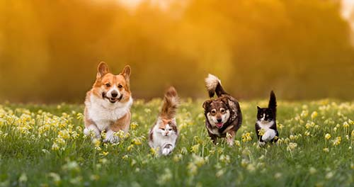

Discover Pets Victoria
PETS VICTORIA IS A DEDICATED PET ADOPTION ORGANIZATION BASED IN VICTORIA, AUSTRALIA, FOCUSED ON PROVIDING A SAFE AND LOVING ENVIRONMENT FOR PETS IN NEED. WITH A COMPASSIONATE APPROACH, PETS VICTORIA WORKS TIRELESSLY TO RESCUE, REHABILITATE, AND REHOME DOGS, CATS, AND OTHER ANIMALS. THEIR MISSION IS TO CONNECT THESE DESERVING PETS WITH CARING INDIVIDUALS AND FAMILIES, CREATING LIFELONG BONDS. THE ORGANIZATION OFFERS A RANGE OF SERVICES, INCLUDING ADOPTION COUNSELING, PET EDUCATION, AND COMMUNITY SUPPORT PROGRAMS, ALL AIMED AT PROMOTING RESPONSIBLE PET OWNERSHIP AND REDUCING THE NUMBER OF HOMELESS ANIMALS.

| PET |
TYPE |
AGE |
LOCATION |
| MILO |
CAT |
3 MONTHS |
MELBOURNE CBD |
| BAXTER |
DOG |
5 MONTHS |
CAPE WOOLAMAI |
| LUNA |
CAT |
1 MONTH |
FERNTREE GULLY |
| WILLOW |
DOG |
48 MONTHS |
MARYSVILLE |
| OLIVER |
CAT |
12 MONTHS |
GRAMPIANS |
| BELLA |
DOG |
10 MONTHS |
CARLTON |